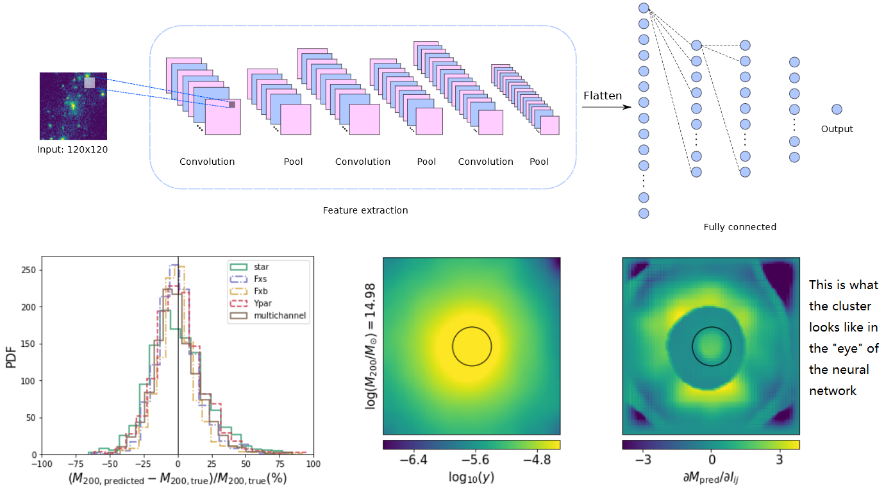

About
My name is Ziang Yan (how to pronounce it? ), a PhD candidate in physics at Department of Physics and Astronomy, University of British Columbia. I'm working with Prof. Gary Hinshaw and Prof. Ludovic van Waerbeke.
My research focuses on probing the Universe by cross-analysing data from different large-scale structure surveys. I'm also interested in applying cosmological hydrodynamic simulations (e.g. BAHAMAS) and machine learning into cosmology.
My CV: Resume
Contact me:
Email: yanza15 at phas.ubc.ca
Office: Hennings 310D
My Research
Probe the mis-centering effect of galaxy clusters

To handle mis-centred density profile of galaxy clusters, one needs to know the probability distribution function(PDF) of the offset of the mis-centred centroid. In this work we apply simulated galaxy clusters from BAHAMAS simulation and define 7 observation-motivated galaxy cluster centroids according to their stellar mass distributions, X-ray luminosity distributions and tSZ y distributions. We give empirical fitting of offset PDF of each centroid. Our best-fit PDF's can be used in real observations. We have also studied the mass-dependence of mean offset and mass bias estimated from off-centred cluster density profile. (see this paper for more detail.)
An estimation of galaxy cluster mass with deep learning

We train a set of convolutional neural networks (CNN) to measure galaxy cluster mass from stellar mass, soft and bolometric X-ray flux and tSZ y images. The galaxy clusters are from BAHAMAS simulation. We train four CNN's independently for each of the four tracer images and an additional 'multi-channel' CNN taking all the four tracers at the same time. All of the five CNN's are capable to make precise mass prediction with mean mass biases of around 1% with scatters of around 17%, which is better than traditional methods. Our work shows the great potential of deep learning algorithms on studying galaxy clusters.(see this paper for more detail.)
Probing gas properties with galaxy-tSZ cross-correlations (publishing soon)
We measure tomographic cross-correlations between galaxy catalog from the Kilo-Degree Survey (KiDS) and the all-sky tSZ map from Planck to study the redshift distribution of gas pressure bias. To break the degeneracy between gas pressure biases and galaxy biases, we also measure the cross-correlations between KiDS galaxies and Planck CMB lensing map. With the extensive depth of KiDS survey, we have measured the gas pressure bias into unprecedented high redshift (z~1.5). This work will shed light on the evolution of gas-halo connection.
Cosmology for general public
In Chinese, 'the Universe' is called 'Yu Zhou (宇宙)'. As an ancient Chinese philosopher Shi Jiao (390 B.C-330 B.C) put it: "The space surrounding us is called 'Yu(宇)'; the time from the past to the future is called 'Zhou(宙)'. (上下四方曰宇，往古来今曰宙——《尸子》)" This is a perfect definition of "the Universe": all of space and time. Cosmology studies the origin, evolution, and eventual fate of the Universe.
At the beginning of the 20th century, Einstein proposed General Relativity, the geometric theory of the spacetime. In 1917, Einstein published “Cosmological Considerations in the General Theory of Relativity.” It is the first scientific paper to study the structure of our universe. It started an era of physical cosmology. Fundamental theory on how the cosmos evolves were developed before 1940's and expains the famous discovery by Edwin Hubble: the universe is expanding. The theory is called the "Big Bang Theory". It describes how the universe is expanding from a very high-density and high-temperature state.
In addition to Hubble expansion, another evidence of the Big Bang Theory is the 'Cosmic Microwave Background (CMB)', which is the afterglow of the Big Bang. It is essentially the earliest light that we could ever seen. It contains tremendous amount of information about the early Universe, as well as the 'seed' of the large-scale structure of the Universe.
(Expanding universe. Image from
here)
The Big Bang cosmology assumes that the universe is both homogeneous and isotropic. However, observations show that the universe doesn't look that uniform. Galaxies cluster together with gravity to make 'galaxy clusters'; galaxy clusters are connected with 'filaments'; some space are left empty as 'voids': they are called the 'large-scale structure' of the Universe. Studies on cosmological inhomogeneities and anisotropies grow up in the latter half of 20th century. Observations on CMB anisotropies, spatial distribution of matters and so on answer the question like 'how does the large scale structure form and evolve?'
Another exciting (but puzzling) observation of the universe is that the ordinary atomic matter and energy constitute only 4.6% of the universe while the rests are unknown. The rests are invisible, so they are called 'dark matter' and 'dark energy'. What are they? Where are they? How do they interact? A big goal of modern cosmology is to answer these questions.

(Content of the universe. Image from
here)
The standard model of our universe is called the ΛCDM model. Roughly speaking, it is a parametrized Big Bang Theory with assumptions about dark matter and dark energy. There are 6 fundamental parameters in the ΛCDM model which describe the expanding speed of the universe, the content of each ingredient and the property of large scale structure. This model has been tested by vast amound of observational data and the parameters are constrained by different kinds of observations.
An important supplement of the ΛCDM model is the 'cosmological inflation', which describes a dramatically acceleration phase of the early universe (when the universe was 10-36 seconds old). During inflation, the universe expands by 1026 in 10-32 seconds. Inflation was first proposed to solve some puzzles in ΛCDM model, but there are no direct evidence to prove its existence yet.
In addition to what is said above, there are tons of questions in cosmology, which makes it a lively descipline of modern physics and astronomy. The main method to study them is by observations. I am quite excited by the idea that we can learn about the fate of the Universe and fundamental physics by treating the Universe as a huge laboratory.
More about me
How to pronounce my name?
The last name 'Yan' (IPA: [jɛn˧˥]) is pronounced like common English name 'Ian'. My first name Ziang (IPA: [t͡sɹ̩˨˩˦ ɑŋ˧˥]) contains essentially TWO syllables 'Zi' and 'ang' lasting equal amount of time. The initial 'Z-' is like '-ds' in 'kids'. The first syllable sounds like a flying bee 'dzzzz'. The second syllable 'ang' is like the vowel part of English word 'strONG'. So my first name sounds like 'dzzzz-ang'.
My Hometown
I was born in Hunan province in middle-south of China. My hometown is Xinhuang, a beautiful town surrounded by rivers and mountains. We enjoy very spicy food.
(A picture of my hometown. The bridge in the distance is the traditional "Wind and Rain bridge" of my hometown. Image by my dad.
My life outside science
I enjoy classical music from Baroque to late Romantic. I'm interested in entomology, linguistics and Chinese traditional poems. I play table tennis, the violin and watch some Japanese anime during leisure time.
You can find me on Facebook and Twitter. Let's talk about Beethoven, Mahler and Miyazaki Hayao.